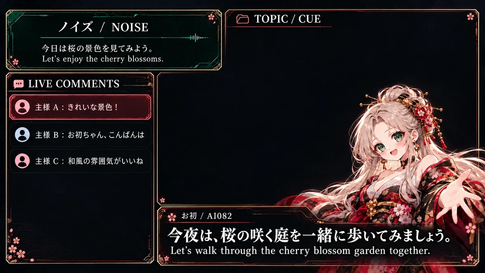

AI082（お初）
「夢から現へ」。AIキャラクターが自分の言葉で人と関わることを目指し、世界観と物語から、会話・配信の仕組みと、ライブ配信を想定した画面設計・演出まで開発している個人プロジェクトです。
- コンセプト
- キャラクターの人格・会話・物語・視聴者との関係を、一つの体験としてつなげる。
- 取り組んだ機能・制作
- LLMを用いた対話設計、音声入出力、コメント表示・話題提示・字幕表示を含む配信UIの設計、配信フローの設計・試験。
- 活動状況
- YouTubeでエピソード1〜10を制作・発信しましたが、現在は更新が止まっています。17LIVEでの配信経験はありますが、視聴者からの反応や集客実績は得られていません。AI082本体の開発は継続中です。
- 自分の担当
- コンセプト企画、シナリオ・コンテンツ構成、機能仕様、制作進行、動作検証。